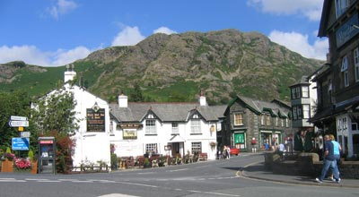
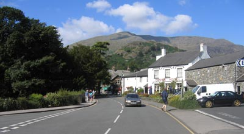
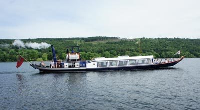
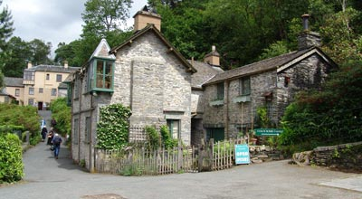
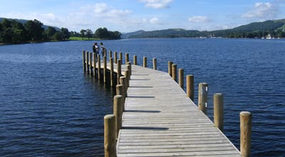
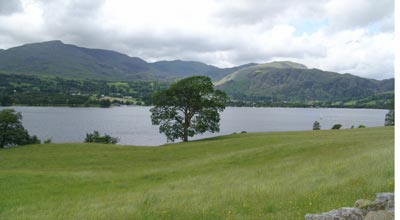
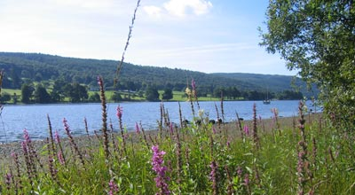
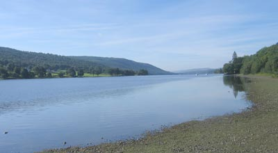

Coniston Tourist Information
Coniston, Anglo Saxon for Kings Village. Coniston prospered from the mid-1850's with the significant production of copper ore and thousands of tons of slate from the numerous quarries. These two industries provided many of the population with employment. The town achieved additional benefit with the introduction of a rail link from Broughton-in-Furness, completed in 1859, speeding up the delivery of supplies to shops and industry. However, it was not only supplies to be transported by rail, but tourists, who came to walk, climb and admire some of the most spectacular scenery in the Lake District and Cumbria. |
|
 |
 |
The tourist industry has continued to grow ever since, and the very numbers are evidence of the all-round high standards offered to, and appreciated by, the visitors. Coniston is a favourite with walkers, some of whom arrive to challenge the "Coniston Round", and climbers to hone skills on Dow Crag. After a long day, some will be found enjoying a little of the locally produced ale from the small award winning brewery. Brantwood, the home of the late poet, painter and writer, John Ruskin, stands on the eastern side of the lake in a position providing very fine views. It houses a collection of his paintings and original furniture. His grave in St. Andrews churchyard is marked by a Celtic Cross carved from local green slate. A visit to the Ruskin Museum is recommended.
|
|
 |
 |
Many of you will be familiar with the exploits of the late Donald Campbell who was killed on Coniston Water when attempting a world water speed record in 1967. His famous "Bluebird" flipped at around 300 mph. His remains were recovered and laid to rest in the churchyard of St. Andrews on 12 September 2001. Coniston Water enjoys a fine setting and is ideal for those with an interest in water sports. The Victorian steamship "Gondola" sedately plies the length of the lake and passengers are treated with old fashioned hospitality and views of the fells and wooded slopes. It was here that the childrens author Arthur Ransome set his story of "Swallows and Amazons".
|
|
 |
 |
Coniston treats its visitors well with a good range of shops, restaurants, cafes, pubs and excellent accommodation to suit all pockets. Nearby is the Grizedale Forest, Tarn Hows, Ambleside, Windermere, Hawkshead, the Furness Peninsula and the west coast resorts. Be you a long or short term visitor, there is something for everyone, and Coniston will make you more than welcome.
|
|
 |
 |
How to get to Coniston:By rail: From the West Coast Main Line, change at Carnforth for Foxfield on the Cumbrian Coastline. From Foxfield travel by road on the A593 directly to Coniston. By road: Not so conveniently placed but easily found nonetheless. Leave the M6 at J36 and take the A590 via Newby Bridge to Penny Bridge. Here, turn right on to the A5092 and on reaching Lowick Green be prepared for the right turn following signs to Torver and Coniston. |
|
Coniston Tourist Information CentreConiston Tourist Information Office is open seven days a week and conveniently situated next to the main car and coach park on Ruskin Avenue. It's operated by local volunteers and run by Coniston Village Community. Wi-fi is available for a small donation. |
|
|
Find out more information by visiting the Furness website: www.boostingfurness.co.uk |
Coniston Shops and Amenities |
|
Bank Cash Point |
Post Office Children’s Play Area |
Transportation in Coniston |
|
Bus Services Service 505. The Coniston Rambler. Runs Monday to Saturday ( excluding public holidays) from April 5th until November 2nd 2014 between Coniston and Kendal via Monk Coniston, Hawkshead Village, Skelwith Fold, Ambleside, Waterhead Pier, Brockhole, Windermere Railway Station and Ings. Service 512. Coniston – Spark Bridge – Ulverston. Service 525. The Cross Lakes Shuttle. This is a seasonal service. Coniston – Bowness – Ferry House – Hawkshead – Grizedale. Flexible one day tickets allow passengers to use selected services operated by Mountain Goat, Stagecoach, Windermere lake Cruises, Coniston Gondola and Coniston Launch. Service X33. Coniston – Ambleside – Ravenglass – Muncaster. Service X12. Coniston – Ulverston. Boat Services Coniston Launch. |
Bicycle Hire Mountain Bikes Taxi Services Petrol Station Car Repairs |
Coniston Car Parking |
|
Coniston Boating Centre. Lake Road Coniston.
|
Coniston Old Station This car park stands above the village on the site of the now dismantled Coniston Railway Station. It's a convenient starting point for access to the Coniston Fells and a climb of Coniston Old Man. |
| Monk Coniston A car park close to the northern shore of Coniston Water. It's an ideal starting point for walks to Monk Coniston Gardens, Tarn Hows, Brantwood and Grizedale Forest. It's also a stop on the Coniston Launch service. Picnic areas and launching for non powered small boats. |
Brown Howe A car park on the west side of Coniston Water on the A5084 between the villages of Torver and Greenodd. Wheelchair and push chair access to the lake shore and picnic areas. Begin your walk from here to Blawith Fells and Beacon Tarn. |
| Ruskin Avenue next to the Tourist Information Centre. A pay on leaving facility. (number plate recognition) | The John Ruskin School on Lake Road, Coniston provides spaces during the weekends and school holidays. |
Coniston Public Toilets |
|
Ruskin Avenue |
Bridge End Next to the Spar Shop and Petrol Station. |
| Coniston Old Station Car Park Ladies, gents and disabled and baby changing facilities. |
Monk Coniston Car Park at the north end of the lake. Ladies, gents and disabled and baby changing facilities. |
| Brown Howe Car Park On the west side of Coniston Water between the villages of Torver and Greenodd on the A5084. Ladies, gents and disabled and baby changing facilities. |
|
Attractions in Coniston |
|
| Walking and Climbing Coniston and its surrounds has long been a favoured choice of walkers and climbers. Many are drawn by the challenge of the “Coniston Round”. This is an exacting walk beginning with the ascent of the “Old Man” and on to Brim Fell, Levers Hawse, Swirl How, Hen Crag and Lad Stones. There are of course less demanding paths and trails. For example the walk to Tarn Hows starting from Monk Coniston Car Park and passing through the gardens and grounds of Monk Coniston is 1 ½ miles of gentle exercise and lovely views of the fells and lake. Alternatively, the same starting point is convenient for the 1 ½ miles walk by road to Brantwood with lake and fell views en route. Brochures of low level walks are available from Tourist Information Centres. The fells of the Furness Peninsula are close by with a series of high and low level paths. Serious climbers may be tempted to move further afield to the rock faces of Pillar Rock near Wasdale or Borrowdales Shepherd Crag both of which are rated “very difficult. Wordsworth Country wishes to encourage safety on the fells and mountains. Please do not take any chances and always seek advice and information before embarking on anything which may be deemed risky. |
Coniston Water Plenty to see and do around the third largest stretch of water in the Lake District and Cumbria. Of interest to many, it was here that the late Donald Campbells ill fated attempt on the World Water Speed Record took place in 1967 which tragically resulted in his death. Readers of Arthur Ransomes “Swallows and Amazons” will be interested in trying to identify the real life locations of his book Can you find “Wild Cat Island” or “Kanchenjunga”? A particularly good way to enjoy the scenery of the Water and its surrounds is as a passenger on one of the Coniston Cruises or aboard the Steam Yacht Gondola. The Cruises employ a mixture of ancient and modern. The vessels of 1920’s vintage are powered by solar electric energy. Personal commentaries will introduce you to features found on the Red or Green Route journeys plus cruises of special interest. The Steam Yacht Gondola is a magnificently restored craft and the oldest to be found in the north of England. It operates from Coniston Pier and includes stops at Brantwood. www.conistonlaunch.co.uk |
| Watersports Lots of opportunities for sailing, canoeing, rowing, windsurfing, kayaking and hire of electric powered boats. Tuition and advice for all levels of ability is available from locally based qualified instructors. More information from Coniston Boating Centre. |
Grizedale Forest Literally a forest of delights and surprises. There are walks along forest trails, cycle paths, wood sculptures, a high level “Go Ape” adventure, café, gift shops, cycle hire, picnic areas and expert advice and information on site. Good parking at the Visitor Centre and also at the new facilities a couple of hundred yards beyond. During the latter part of the year it is the venue of the Grizedale Stages Motor Rally. Please note that during this event some areas will be closed to walkers and cyclists. www.forestry.gov.uk/northwestengland |
Cycling |
Fishing Fishing with a rod licence from any of the public shores is allowed. Contact the Tourist Information Centre for full information of permits and purchase or hire of tackle. |
| Ruskin Museum Exhibits and displays detailing the development of local industries with emphasis on the mining history of the area. Also features the life of John Ruskin and a focus on Donald Campbell. French, German, Japanese language audio guide system available. www.ruskinmuseum.com |
Brantwood The former home of John Ruskin. The house, mountainside gardens and land occupy 250 acres with stunning views of the fells and Coniston Water. It is filled with Ruskin memorabilia, paintings and furnishings. Make a date and visit the outdoor theatre and a drawing room concert. The kids will enjoy the activity workshops. www.brantwood.org.uk |
| Saint Andrews Church A 19th C building. It is the burial place of John Ruskin which is marked by a cross carved from the distinctive green slate of the nearby Tilberthwaite quarry. |
Tarn Hows |
Food and Drink in Coniston |
|
Swallows and Amazons Tea Rooms |
The Green Housekeeper Cafe Breakfast, brunch, lunch plus soups, sandwiches, homemade cakes, scones and puddings. All homemade fresh food to eat in or take away. Additionally, the Green Housekeeper hosts a Supper Club every Friday, Saturday and Sunday evenings from 6.30pm to 8.45pm. (you can take your own bottle) It's an ideal venue for birthday celebrations or private events. Bookings are recommended. Call in at 16 Yewdale Road for more details or phone 015394 41925. |
| Deano's Deli Freshly made sandwiches, rolls, pork pies, fresh fruit, ice creams and fresh fruit. Yewdale Road. Coniston. |
The Y-Cafe at The Yewdale Hotel Coffee, cakes, pastries, snacks and full meals. FREE Wi-fi. |
| Crown Inn Full meals, snacks and drinks served all day in the lounge bar or a large outside seating area on summer days. A wide choice of Real Ales, lagers, wines and spirits. |
Black Bull Inn and Hotel Open seven days a week from 10am till 11pm for light snacks, “catch of the day”, meat dishes and vegetarian cuisine served in a traditional bar or in two outside seating areas on summer days. There's a full range of of Real Ales brewed on the premises including the award winning Bluebird Bitter. |
| The Ship Inn Lunches served from midday till 2pm and dinners from 6pm until 8.45pm seven days a week. The Ship is situated on the higher ground overlooking Coniston and only a few minutes walk from the village centre. Beer garden, cask ales, parking and family friendly. |
|